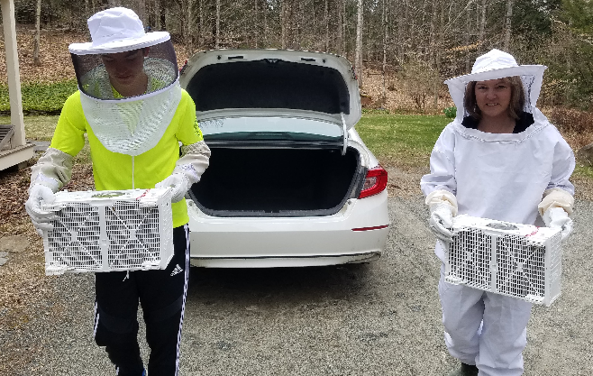

Welcome to my page on beekeeping!
Goals of this page
This page aims simply to share a bit about why I enjoy beekeeping as a hobby, and what bees are all about!First of all, why keep bees?
I keep bees for multiple reasons: first of all, I like the honey; second, I really enjoy seeing the colony grow and develop; third, it helps the bees, which help gardens and other plants flourishNow, let's go through an average season
Spring
The first thing that one has to do to keep bees is install them! So we drive down to a local beekeeper and pick up two packages of bees. Each package has about 10,000 bees!We then stick the bees in the trunk of the car and drive home (at this point, they're very docile so this isn't much of a problem).
When we arrive at home, we have to install the bees! This, well, it's not as delicate a process as you might imagine...

You first install the queen in the hive.
Then, you just empty the bees (by dumping them) into the hive. Give it a couple shakes and you're all good! Since the bees have no honey to protect, they're extremely friendly and only get a bit annoyed when you shake them into their new home.
Then you must leave the bees to themselves for about a week before opening the hive. At this point, the queen should have chewed through the marshmallow stopper separating her from the other bees, and hopefully they will have accepted her as the queen. If not, well... oops.
Wait -- hold up -- marshmallow stopper? Yup, you heard right! When the bees first arrive, they've only been with their queen for a very short amount of time (they didn't come from the same colony to start), which means that the bees aren't used to their new queen! So, the queen comes in a little cage for her protection, By placing a mini-marshmallow, blocking the exit of her cage, you give her a little food to tide her over until she finally chews her way through (by which time you hope she has gotten to know her bees, or they'll rip her to shreds).
This year, we've named our bees Jessie and Kikkan (after the first -- and as of right now, only -- US skiers to win an olympic gold).
Summer
In summer, a healthy colony will grow to about 10x its original size, from 10,000 bees to 100,000 bees!This growth is thanks to the queen, who can lay up to 2,000 eggs in a single day, amounting to more than her own body-weight!
Then again, the worker bees also deserve some credit for this increase. Each day, worker bees will fly up to 15 miles in search of pollen and nectar. This, they then feed to the baby bees (called brood), and to the queen (who has a very difficult job! The nectar they collect, they also store as honey so they have some sustenance to make it through the winter.
The only bees who are, quite honestly, useless in this whole process are the male bees, the drones. Drones sit around, gathering no nectar and generally nor really helping out, helpful only in case the colony ever gets a new queen.
Fall
By fall, the bees have enough honey stored away that they start getting aggressive and less fun to work with.This is also the time when predators will be most interested in the bees. Predators can be animals like skunks or bears, but also wasps, etc. Wasps in particular pose a problem because unlike bears and skunks, they cannot be turned away by an electric fence.
Thus, during fall you might notice wasps near the entrances, trying to wrestle past the guard bees and into the hive, after the honey inside.
Fall is also the time to harvest the honey -- during the summer, you add "honey supers" in which the bees store their honey -- some of the frames can be removed and the honey can be spun out, using a machine called an "extractor."

And voila! Honey!
Pretty soon, the flowers become scarce and the weather becomes colder and it's time to insulate the hive...
Winter
During winter, all you can really do is cross your fingers and hope. With luck the bees will have enough honey stored up to make it through the winterUnfortunately, you can't ever be sure they'll make it through. This past year, our bees had plenty of honey, but mysteriously died somehow at what we think was early into the winter.
Then, in the spring comes the grand reveal, when it's time to check if the bees made it -- if they did, you don't have to reinstall them!